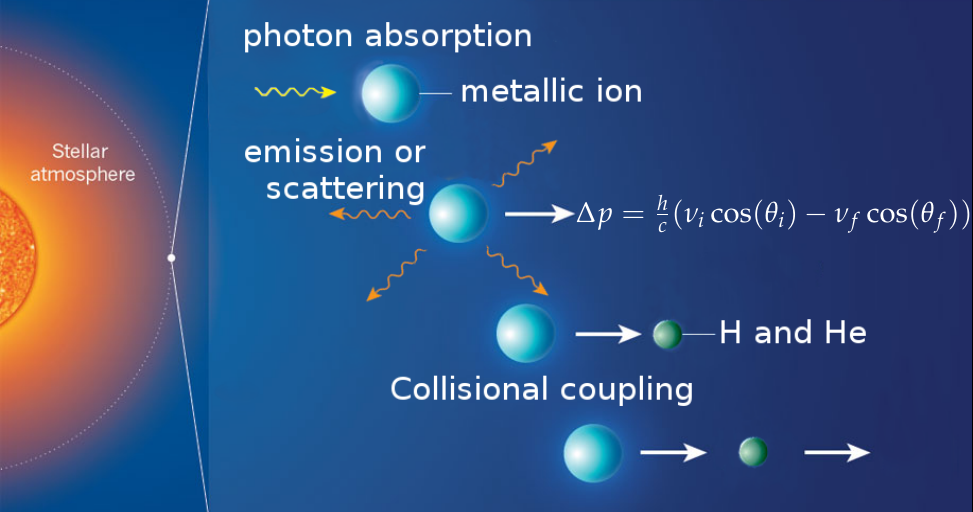
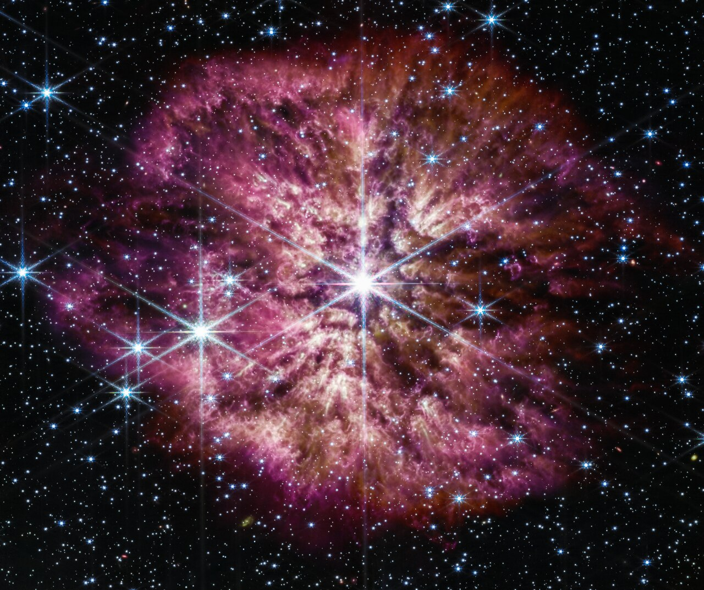
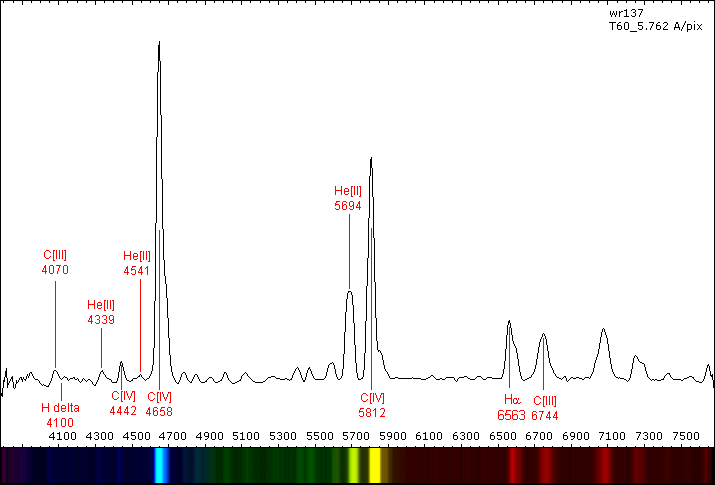
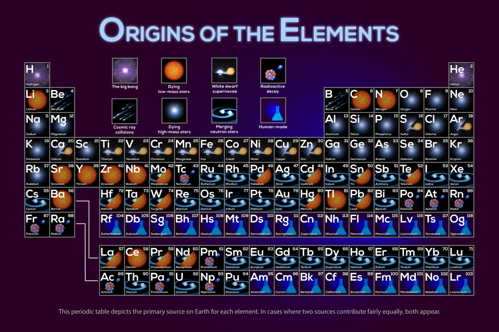
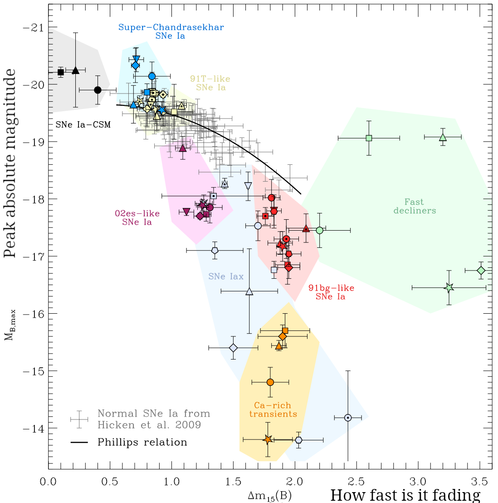
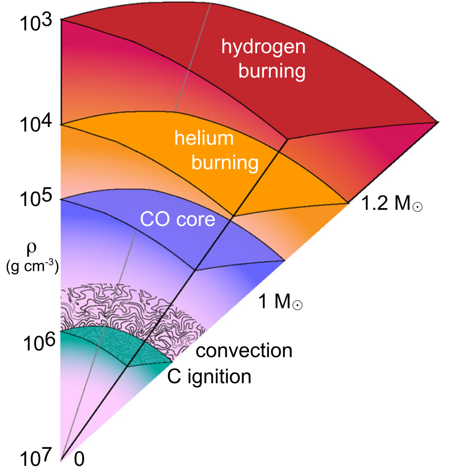

Reading: Chapter 14, 15, 16, 17, Prof. Onno Pols lecture notes, ASTR400A lecture notes
High-mass star evolution
This video, made with this MESA setup shows an example evolution of a \(12\,M_{☉}\) mildly rotating star from formation to the end of its life.
Main sequence evolution
Not only massive stars are more rare to form (cf. Initial mass function \(IMF\)), but their higher energy loss or radiative power output \(L\) - compared to lower mass stars - requires an equally higher \(L_{\rm nuc}\) to sustain the gas pressure gradient against gravity.

We can empirically see from the color-magnitude diagram of the galaxy, that massive stars are rare! They are also bluer and hotter.
Contributing to their rarity, a higher \(L_{\rm nuc}\) corresponds to a shorter lifetime: a star 10× as massive as the Sun only lives 20 million years (cf. ∼ 10 billion for the Sun).

MESA and GENEC models are shown, focusing on masses that result in a final core-collapse event. The bottom panel shows the deviations between the analytic fit and the numerical models.Because of the shorter lifespan, massive stars tend to live closer to each other (while low mass stars have time to spread).

However, stellar explosions or gravitational slingshot encounters in dense stellar clusters can accelerate stars in a galaxy, even beyond the escape velocity from their own galaxy. These phenomena preferentially accelerate massive stars, that can become runaways.

These stars are hot at their surface, and their thermal radiation peaks in the UV, but nevertheless so bright even in the optical, that they outnumber the stars we can see the farther we go.
To sustain such high luminosities (dictated by the total mass \(M\)!), they also need very hot cores which enables hydrogen burning through the CNO cycle using carbon, nitrogen, and oxygen present from the start as catalyst to make protons meet:

This mode of hydrogen burning (same overall reaction) is much more sensitive to the temperature: the burning region is more concentrated than in lower mass stars.
- Top Hat Q3
But this makes their cores convective: photons alone are insufficient to carry out the energy output by the CNO cycle without the help of convection. But convection is bulk motion of matter which refuels constantly the burning region.


MESA model across its main sequence evolution. The color go from dark to light, and as time passes the core recedes because of the change in composition that facilitates radiative energy transport.N.B.: Nevertheless the \(L\propto M^{x}\) with \(x>1\) is so large that their lifetimes are short.
Prompt He ignition
At the end of the main-sequence though, we have a problem: H has been consumed throughout the convective region, the outer layers of which are way too cold to burn! Gravity temporarily takes over and the whole star contracts: half of the gravitational potential energy released by gas falling to the center goes into internal thermal energy of the gas itself: electrons are too hot to "sit" in an energy level and fight for the lowest energy seats and don't contribute to the pressure.
Instead, the center gets so hot that He ignites in the center (smoothly, no He flash) and the H shell ignites. The latter supports the envelope, but once again the shell is not self-regulated: H burns at the edge of the core, with the \(T\) dictated there by the underlying core mass and consequently structure. This results in an excess energy production and thus the envelope expands: the star becomes a Red Supergiant.
The nearest RSG to Earth is Betelgeuse, the shoulder of Orion:

By counting the number of RSG and MS in a co-eval population (e.g., a cluster), we can infer that RSG are ∼10% of massive stars: this remains true across stellar masses and is dictated by the nuclear structures of He and carbon C.
The expansion must be relatively fast (for stars, not for humans): there are very few stars occupying the region of the CMD between the main sequence and the red supergiants (RSG). However, looking where we can see more massive stars, for example LMC/SMC, there seem to be a "Blue supergiant problem": we see many and don't fully understand why.
Possible ideas are:
- stellar mergers
- stars that have accreted mass from a companion
- stellar evolution is proceeding slightly differently in galaxies with different chemical composition than the Sun
Onion structure
From now on, the fate of a single massive star is sealed: it will consume each nuclear fuel available, each requiring a higher energy of the collision between nuclei to enable quantum tunneling through the electromagnetic barrier and fusing into new nuclei held together by the nuclear force.
Most of the core energy loss since carbon core burning has been though neutrinos produced by thermal processes (not from nuclear reactions): massive evolved stars appear as RSG and are brighter in neutrinos than photons!

For large but not so large \(M\lesssim 15\,M_{☉}\) the electrons will sometimes contribute partially with their degeneracy pressure.
N.B.: Recent numerical simulations, and possible nucleosynthetic signatures suggest that the "onion" picture could be an oversimplification. Very late shell ignition in partially degenerate environment can be relatively violent (akin to the He shell) and cause "shell mergers". This could mix different nuclear fuels in a dynamical event and allow the production of some elements like phosphorus by ruining the nice layered onion.
The composition of the hashes of each fuel are (much like which fuel is most efficient) determined by the nuclear structure of each element:

Nuclei that can be conceptualized as bound states between groups of 2 protons and two neutrons tend to be more stable, meaning forming them releases more energy: this is why nuclei with \(A=4\times n\) with $n=1,2,3,…$ correspond to peaks in the figure and are more common elements in the Universe. Stars find it convenient to make them! Note that these include Helium (whose nucleus is also referred to as \(\alpha\) particle), Carbon 12 (3 \(\alpha\) bound together), Oxygen 16 (4 \(\alpha\)), Magnesium 24, etc…
N.B.: \(\alpha\) nuclei are to nuclear physics what noble gases (He, Xe, etc…) are to chemistry: tightly bound structures that release a lot of energy (for their scale, 10 MeV for nuclear physics, eV for chemistry) when formed, and are relatively stable.
But this game has an end: the curve in the figure has a "maximum". There is a most bound nucleus, iron 56. All lighter and heavier nuclei are easier (takes less energy) to rob of one nucleon (proton or neutron). As a consequence, trying to reshuffle the protons and neutrons of \(^{56}\mathrm{Fe}\) in another configuration always costs energy (negative \(\Delta y\) in the figure).
But the only reason there is nuclear fusion in any star is that as gas fights gravity it settles in a structure that is hot in the center (to sustain a pressure gradient), so hot that gas taps into the nuclear binding energy, compensating for the luminosity losses which enable the collapse. In short: the burning occurs to compensate the losses. If it costs energy to burn iron, it would only accelerate the collapse and the gas has no further interest in doing it.
N.B.: it's a bit hard to track cause and effect because gravity, gas structure, thermodynamics, and nuclear physics are coupled non-linearly.
Stellar winds & Wolf-Rayet stars
Massive stars are characterized by a very large \(L\), this forces their relatively short lifetimes (∼ 10 million years vs. 10 billion years for a \(1\,M_{☉}\) star), and determines their burning mode through the CNO cycle (as opposed to the pp chain dominating in lower mass stars). A large luminosity also implies there are many photons that can interact with the stellar atmosphere and push the gas. This can drive a stellar wind through radiation pressure (as opposed to the stellar wind which is gas-pressure driven).

The stellar atmosphere which is by definition partially transparent: it is the layer of gas sitting above the location from where thermal radiation from the stellar interior is starting to leak out almost unimpeded by matter (almost!). So while photons still travel in any random direction in the atmosphere, there is a net radial component of the radiative energy flux towards the outside of the star.
In this layer, like in any else, most of the mass of the star is in H and He, but most of the electron transitions are in metallic ions, specifically Fe ions. Therefore, photons filtering through the atmosphere are most likely interacting with a metal ion, which can absorb a photon and get its momentum!
When the ion de-excites, the probability of de-excitation is isotropic (the emitted photon is equally likely in any direction), so the ion excitation takes some preferentially radial momentum in, and de-excites in a random direction: the net result is the photons push the metals out.
But everything is still ionized: the positive metal ions are electromagnetically coupled to H and He and drag them away. This is the fundamental picture of a line-driven wind. As the star evolves, and grows in radius during shell burning phases, its atmosphere cools, and more opaque matter can form (ions with more electrons, molecules, dust): mass loss increases significantly for RSG.
While we saw that the solar wind is not removing much mass \(\dot{M}_{☉} \simeq 10^{-14}\,M_{☉} \mathrm{yr^{-1}}\), line-driven winds in massive stars caused by their high \(L\) can remove significant amount of mass, the more massive a star is initially, the more luminous, the more mass it will lose!
A way to see this is to calculate a timescale associated to mass-loss. Using dimensional analysis for a star of mass \(M\) and mass loss \(\dot{M}\) we can define:
We see that \(\tau_{\rm ML}\) is typically longer than the lifetimes of the stars, for massive stars it can become comparable: radiatively driven winds in massive stars can have a strong structural impact on the star (and not only its rotation rate like low-mass-loss rates pressure driven in the Sun).

In the most extreme cases, a massive star can self-strip: winds can remove it's hydrogen-rich envelope! These stars, named after their co-discoverers, are called Wold-Rayet (WR). They are a spectroscopic class (like O, B, A, F, G, K, L, M defined based on the morphology of the spectrum by the "Harvard computers" and then re-organized and understood thanks to the understanding of radiative transfer and atomic physics by Annie Cannon and Cecilia Payne Gaposhkin): a WR is a hydrogen-poor (not necessarily hydrogen-free) star with such a thick stellar wind that it blocks photons even outside the stellar atmosphere and the strong stratification of the wind results in emission lines.
Basically, for a WR we don't see the star, but only its wind. The most massive stars will evolve into WR, the more massive, the higher \(L\), the stronger the wind, the sooner they self-strip.

Super-massive stars
We have already seen that highest possible mass for a star is not well understood. Especially for the very first generation of stars, formed from pristine, non-polluted material from the Big Bang (so just H and He, nothing else), the masses of stars may have been much much larger, exceeding \(1000-10^{5}\,M_{☉}\).
These are theoretical objects: none of our telescopes can see these stars. Nevertheless, it's pretty obvious that metals exist, so stars at some point must have started appearing and processing the gas into heavier nuclei.
The reason why these first stars may have been so big are twofold:
- with only H and He, the gas has few electronic transition to use to emit photons and radiatively cool. This prevents fragmentation of the proto-stellar cloud and leads to a bigger star.
- We see super-massive BHs at the center of galaxies that are too big to have grown swallowing mass: a possible solution is that gigantic stars collapsed into the seeds for these BHs, reducing the need for accretion to increase their mass.
Super-massive stars above a certain limit may collapse because of general relativity destabilizing their \(P\equiv P(T)\) relationship, before processing many nuclei into heavier elements: so the argument that these stars must exists based on the composition of the universe also requires that they not all collapse into super-massive BHs!
Gravity's victory: core-collapse and compact object formation
Neev will cover this in detail after the exam: suffice to say here that for \(M\gtrsim 7.5-10\,M_{☉}\) (the exact value depends on the details of the chemical composition, rotation of the star, and maybe most importantly the likelihood that it interacts with a binary companion before its death), gravity ultimately wins: the iron core can only lose energy and contract.
The collapse of the iron core brings it from (\(\rho\sim10^{10}\mathrm{g\ cm^{-3}}\), about 10 billion times the density of liquid water) to densities exceeding briefly the nuclear density: at that point the nuclear force stops abruptly the infall, causing a shock wave: this can explode the star in a supernova, dispersing the outer layers (closing the "galactic enrichment loop" described here).
For example, the oxygen that we breath is synthesized in massive star cores!
N.B.: You may have heard that plants make oxygen: that is true, but at molecular level: plants release O2 molecules as a byproduct of photosynthesis. But plants aren't nuclear reactors: they are packing together two existing O atoms through chemical processes at eV scale, the nuclei already existed on Earth, where they come from the primordial gas that formed the Sun and its solar system.
However, the heaviest elements (silicon, iron) end up locked in the remnant neutron star or black hole. Plus the existence of nuclei of anything heavier than iron that the stars would not synthesize remains still unexplained.
Origin of elements

Most heavy elements cannot be produced by exoenergetic fusion processes inside a star in hydrostatic equilibrium. Nevertheless, to make their component nucleons come close enough together that the strong force binds them, extremely high relative energies between the incoming nuclei are needed. This leaves high-energy astrophysical phenomena such as stellar explosions, mergers, and extreme transients as promising sites.
Neutron-capture processes
In most cases, the formation of heavier elements proceeds by sticking neutrons onto a seed nucleus (e.g., iron), and then have the newly formed neutron-rich nucleus decay into a stable element.
By using neutrons, we avoid dealing with the electromagnetic repulsion in the nuclei, however, free neutrons are unstable and decay in 15min: for these processes to happen we need a neutron source.
We distinguish two processes based on the amount of neutrons that can be captured before the decay of the neutron rich nuclei.
The two videos below show in the top inset the \(T\), \(\rho\), and energy generation rate from a simulated thermodynamic trajectory of the gas. The main panel shows the abundance (= fraction by mass) on a Z(N) plane (number of protons vs. number of neutrons) and the bottom inset gives the resulting yields from skynet, an open source nuclear-reaction network developed by J. Lippuner.
S-process
"S" for slow: in this case the neutrons are captured one-by-one. One neutron capture, followed by one decay, and so on.
This requires only moderate neutron fluxes, and never produces nuclei more neutron-rich than by one neutron. We think it can occur in thermally pulsating AGB where some neutron-rich carbon can be formed in the intra-shell region and mixed outwards, where it ejects its neutron and enables the s-process.
R-process
"R" stands for rapid: the neutron captures occur faster than the decays. This allows to build extremely neutron rich elements, before they decade, flushing the "wrong nucleons" into the "right" type to become a stable isotope.
This requires very high neutron fluxes, basically only realized in extremely dense flows where electron captures on protons can generate lots of neutrons, typically involving neutron stars (mergers with something else, or ejecting part of their crust).
Explosive stellar phenomena
Very often, binary interactions between stars are key to create these phenomena!

In the following, I briefly describe some transients relevant to nuclear astrophysics - a vast, and still active, topic of research that started with the B2FH paper in 1957 (led by Margaret Burbidge).
SN Ia
We have seen that stars with initial mass lower than \(\lesssim 7.5\,M_{☉}\) end their life as stable WDs, which cool and contract forever.
However, there is a maximum mass that a WD can have: what happens when a binary companion dumps mass onto a WD? The outcome is very sensitive to the mass-transfer rate (how much mass per unit time is transferred), but it can in some case result in a type of supernova transient too, called SNIa.
These show in their spectra at peak no H and He (there is little to none left in the WD), and shows strong silicon lines: the presence of silicon in the ejecta suggest this doesn't come from the core of a massive star (most of the silicon goes into the neutron star or black hole remnant). Instead, that silicon is the product of an explosion in the WD triggered by the accretion.
Exploding WDs produce most of the heavy elements of the silicon and iron group!
These SNIa are also very important for cosmology, because three is a standardizable relation between their peak luminosity (which if we measure the brightness can tell us the distance) and decline rate in B band (so called Phillips relation).

Novae
If the accretion rate on a WD is too high, the newly accreted gas will explosively ignite H burning: this can produce some non-standard composition.
X-ray burst
We can consider the same process above, but with a neutron star accreting. Because a typical neutron star radius is \(\sim10\,\mathrm{km}\), gas accreting on a NS has to fall much further down than gas accreting onto a WD: this liberates more of its gravitational energy, leading to higher \(T\) and more explosive burning.
X-ray bursts on a NS may be the primary pathway for certain heavy elements
long-GRBs: collapse of fast rotating magnetized stars
Rotation can help the gas in its fight against gravity: in the frame of reference co-rotating with the star it introduces a centrifugal force (apparent!) which partially fights gravity (the more the farther from the rotation axis).
Rotation is also stirring the star and mixing it: this can make the cores bigger than they normally would.
When a fast rotating, magnetized stars collapses, some matter may have too much rotation to fall onto the center directly (there is a centrifugal barrier). This matter can start orbiting the center in a disk (densities in a collapsing star are high), and the disk can generate magnetic fields which can squeeze gas out in a jet.
The disk may be dense enough to neutronize and do r-process, although this is highly debated presently: the conditions to neutronize and the conditions for an outflow seem to be in tension.
These kind of transients produce long γ-ray bursts (GRB): these transients were first observed by satellites monitoring nuclear experiments during the cold war, and they were finally associated to dying stars with SN1998bw.
The video below shows a numerical simulation from Gottlieb et al. 2025 of a very massive long-GRB progenitor (yellow show magnetization, blue shows gas density).
short-GRBs: Neutron star mergers
There is another kind of γ-ray transient: when two neutron-stars merge. Neev next week will discuss this in more detail.
The lower-mass boundary for "massive" stars: super AGB stars and electron capture SNe
At the boundary between "low and intermediate mass stars" (which end their evolution as WDs) and "massive stars" which form NS/BHs there are so-called super-AGB stars.
These are low-enough in mass that their CO core becomes degenerate and electron-supported, and they experience thermal pulses. Because of neutrino cooling, the inner center cools faster than the outer center, and if and when a super-AGB star ignites C burning, it does so off-center. This produces a meter-thick flame propagating inwards subsonically: whether it reaches the center (⇒ evolution to core-collapse) or not is a very challenging numerical problem.
Even if C burning is also partial, it may leave behind a ONeMg WD (heavier element composition than the typical CO WD). This can still be embedded in the shells of He- and H-rich material, and supported by the electrons.
However, as the core cools (mostly to neutrinos) and loses energy, it contracts and its density increases. If \(e^{-}\) captures on O, Ne, Mg elements occur, this removes the support for the star and triggers a core-collapse before the star has burned all the way to iron in its core.
From the outside, these so-called "electron capture SNe" are hard to distinguish and disentangle from normal SNe.
